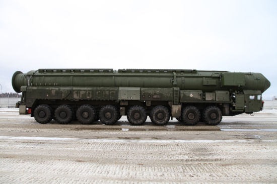

2014-10-14 16:59:00
我寫這個部落格所定下的目標是要幫助提升台灣大眾對國際事務的認知水準，必須盡我所能，糾正台灣媒體對這些事務有偏頗、錯誤或不完全的報導。所以我將用两個文章對中國時報上這個禮拜有關中共和印度的彈道飛彈的两篇報導做更正和澄清。如果讀起來有吹毛求疵的感覺，還請見諒。此外我並没有暗示中國時報的文章問題特别多的意思；恰恰相反，正是因為中國時報大體上還算中肯，我才會注意到這些問題。像自由時報那様隨意撒謊捏造消息的媒體，我向來是把它當作簡易移動廁所一様，非不得已不會進去；就算進去了，也是捏着鼻子、屏住呼吸，快用快出，自然也就不太注意到它細節上的問題了。
第一篇文章在這裡：http://www.chinatimes.com/newspapers/20141013000771-260309，它講的是中共最近試射的東風31B彈道飛彈。文章裡的第一句就不對，東風-31B並没有使中共“繼俄羅斯後，成為世界上第2個具有生產攜帶多枚分導彈頭洲際飛彈的國家”；實際上是世界上第3個。世界第一當然是美國，在1970年就部署了民兵三型（Minuteman III）導彈，開創了世界第一個多彈頭分導系統。文章接下來所說的每一句話都有毛病，我乾脆在此從頭簡單介紹一下和東風31B有關的所有背景資訊。
早期的ICBM（Inter-Continental Ballistic Missile，洲際彈道飛彈）使用的是液體燃料，這就有很大的麻煩，因為液體燃料必須分開保存，發射前再注入彈體，不但使整個系統變得很複雜而且脆弱，也拖延了發射準備時間至少一個小時以上。所以美國在1960年代初就積極研究固態火箭燃料，1962年開始部署35公噸重的民兵一型，射程達到能涵盖整個蘇聯的13000公里；此後美國一直在固態火箭燃料配方上領先世界。民兵飛彈也是世界上第一個使用數位電腦的ICBM，在數位電腦極為稀有昂貴的60年代就裝了一部迷你電腦（Mini-Computer），所以它的準確度也是劃時代的。1967年小改以後，改稱民兵二型，仍然裝備了單發的W56氫彈頭。1970年的民兵三型才改為三彈頭設計，历年來經過W62和W78之後，在2007年改用原本裝在更先進的MX飛彈上的W87彈頭。MX飛彈是比民兵大將近三倍的超大型ICBM，重96公噸（民兵三型重35公噸），射程14000公里，可以携带12枚彈頭。在冷戰結束之後，美俄都願意把他們可以炸遍全球幾十遍的ICBM裁減到比較不誇張的數目，討價還價的結果是MX在2006年就全部退役了。美國目前的主要核嚇阻力量是潜射ICBM（使用與W87同尺寸、結構相似的W88氫彈頭），陸基導彈是很次要的，所以民兵三型不需要有機動能力，直接部署在發射坑（Missile Silo）裡。
冷戰期間，蘇聯因為没有美國那様强大的空軍，對ICBM非常重視，在性能和數量上一直没有被美國拉開太遠。1968年部署了SS-13，這是他的第一型固態燃料導彈。1978年部署了SS-17，裝備了四個分導彈頭。蘇聯崩裂以後，俄國失去了位於烏克蘭的南方設計局，對固態燃料火箭的製造能力一夕之間大幅倒退，以致在過去幾年試射新型的陸基和潜射ICBM時，有十幾次失敗的記錄。今年總算有了幾次連續成功的試射，不過還没有到正式部署的地步。

俄國的白楊M洲際導彈，目前部署的只有單彈頭，相當於共軍的東風31A；多彈頭和潜射的版本還在艱難攻關之中。
在研究分導彈頭的過程中，有两個主要的新技術：分導彈頭載具（Multiple Re-entry Vehicle，MRV）和彈頭的小型化。前者其實不難，和舊型的單彈頭載具基本上是一様的，只是須要縮小一些。氫彈頭本身的小型化，才是最大的難關。連技術超强的美國，都花了二十年時間和無數的心血，才由Lawrence Livermore和Los Alamos實験室分别做出了讓人滿意的W87和W88。中共其實在1970年代就實験過分導技術，在MRV方面完全没有問題，但是卡在了小型氫彈頭上。
1998年，一名中共的核彈研究機構的雇員（實際職務和身分不明）走進了美國駐香港的領事館，宣布他要投誠。他帶着一份給美國人的大禮物：一本已經翻成中文的W88技術手册。美國的反情報界在震驚之餘，開始對所有能拿到W88手册的人進行過濾，尤其是華裔美籍的個個成了可疑的叛徒。Los Alamos作為一個研究性機構，自由度是相對地高的，更是重點中的重點。可是經過一年的調查，FBI就是找不出任何真正的線索；唯一的嫌疑犯是一個十幾年前曾經對FBI撒了謊，說他不認識當時被調查的另一個華裔的台灣人，叫李文和。台灣人在怕惹事上身的時候，這様的反應是很普通的，可是FBI承受了很大的壓力，急着破案，就把李文和的辦公室和住家翻了好幾遍。雖然只發現他違反了保密規定，把一些工作文件帶回家，但是因為没有别的嫌犯，檢察官還是硬上，以間諜罪起訴了李文和。還好遇到一個客觀的法官，李文和只被定了違反保密規定的罪名。至於真正的洩密人，到今天仍然沒有被發現。
從李文和的故事，我們可以知道中共在1998年以前就已經拿到了W88的設計。先進的核彈頭和舊型的相比，並没有像特殊合金或高性能晶片這様非常難以仿製的零件。中共頂多花上幾年，必然能複製W88，所以小型氫彈頭早已不是難關了。前幾年共軍開始試射東風41，其載荷遠在一噸以上，可能可以携帶10枚W88級的彈頭，那麼頂多只能帶3枚W88飛行13000公里的東風31B，在技術上就實在没有什麼特别的意義。上個禮拜美國媒體開始炒這盤冷飯的時候，我本想不予置評，直到台灣媒體和名嘴們也跟着瞎起哄，這才被迫出來闢謠。
那麼已經擁有東風41的二炮為什麼還要投資在為東風31改裝分導彈頭呢？這道理很簡單，東風41是全新的設計，可靠性還有問題，所以用早已成熟的東風31來當備分是應該的。畢竟核嚇阻能力是直接影響國家生死的大事，没有備分才是奇怪的。此外中共的潜射ICBM還不够先進，陸基導彈是主要力量，必須能公路機動以躲避敵人的先發打撃，42公噸重的東風31畢竟是比65公噸重的東風41輕了不少，部署在公路不發達的荒郊野外也能做較多的越野機動。
最後我想提一下，分導彈頭像W87或W88，只有不到舊式的W56一半的體積和質量，所以其當量（Yield）也小得多。這就要求ICBM要有高度的準確性。中共的北斗導航系統有着許許多多的軍事應用，ICBM的導航也是其中之一。東風41到2010年代才出現，其主要難度固然是在可以公路機動的重量上限内達到傳聞中的1.7公噸的載荷，一個不受美國制約的全球導航系統也是必要的環節之一。